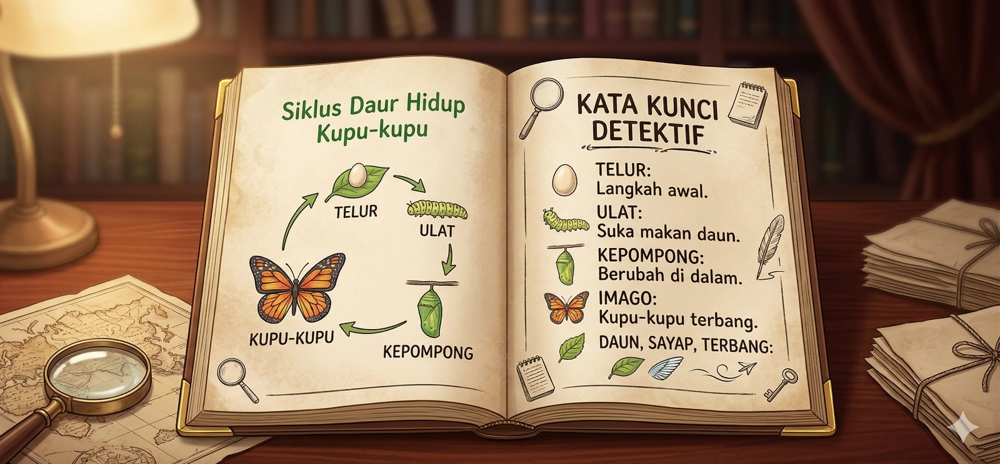

Siklus Hidup
Makhluk hidup butuh berkembang biak untuk mempertahankan keturunan atau jenisnya di Bumi. Maksudnya berkembang biak adalah menghasilkan keturunannya. Siklus hidup merupakan tahapan kehidupan yang dialami makhluk hidup sejak lahir.

Apa itu Metamorfosis?
Metamorfosis adalah perubahan bentuk pada siklus hidup makhluk hidup. Metamorfosis bisa dibedakan menjadi 2 jenis yaitu metamorfosis sempurna dan metamorfosis tidak sempurna.
Metamorfosis Tidak Sempurna
Pada metamorfosis tidak sempurna, hewan mengalami 3 fase pertumbuhan. Contoh metamorfosis tidak sempurna terjadi pada belalang dengan urutan fasenya telur, nimfa dan imago atau belalang dewasa

Kata Kunci
Hampir semua serangga mengalami metamorfosis. Namun, ada juga hewan-hewan selain serangga yang mengalami metamorfosis, contohnya katak.